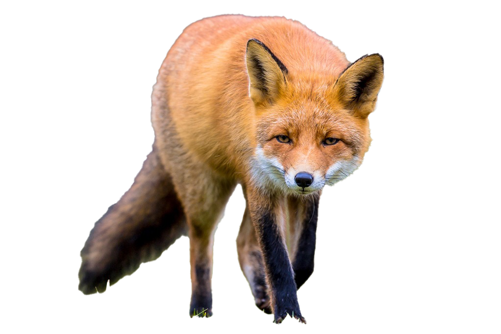
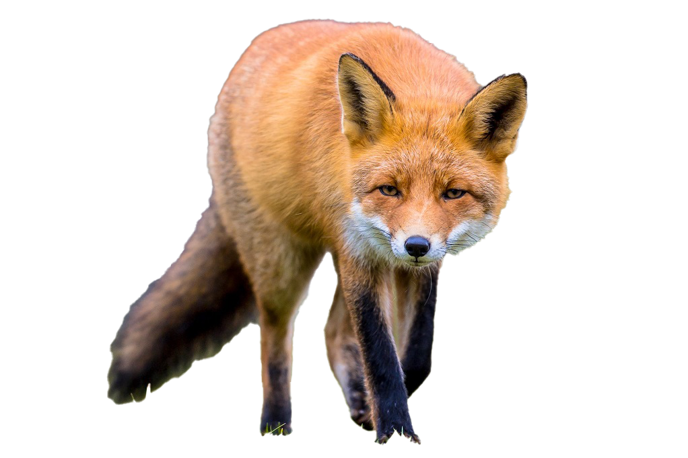

Vulpea mananca mamifere mici, cum ar fi soarecii de camp, iepurii, castorii, dar si veveritele si lemingii
Vulpile rosii comunica prin sunete, expresii faciale, posturi corporale si prin marcarea extensiva a teritoriului.
 
